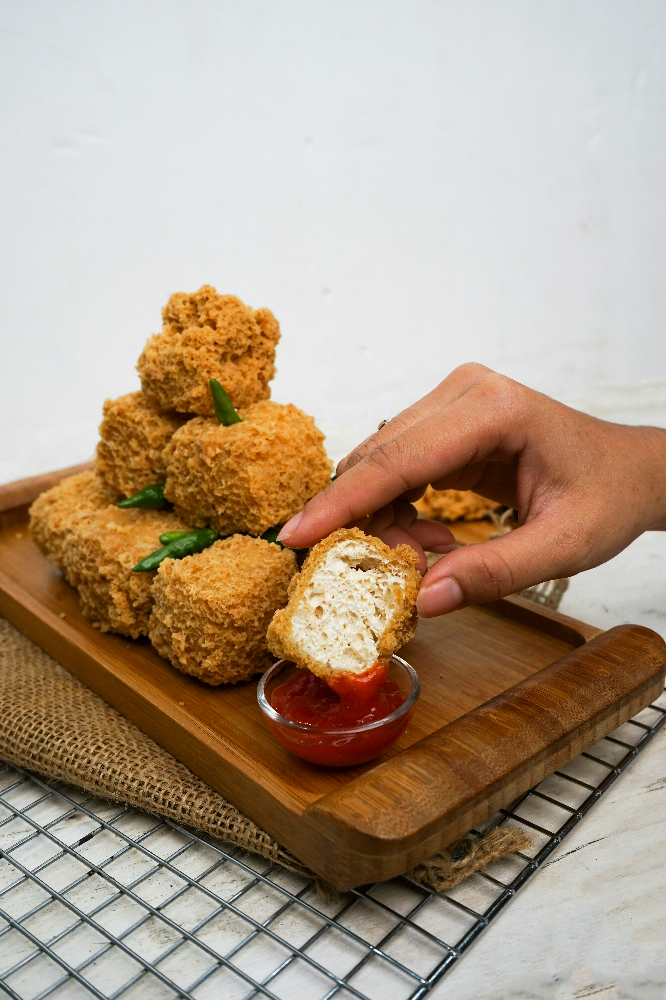

HOME
TOFU RECIPES

Description
Tofu is a soft, protein-rich food made from soybeans, widely used
in China and across Asia. It’s created by curdling fresh soy milk
and pressing the curds into blocks, similar to how cheese is made.
Tofu has a mild, neutral taste, which makes it excellent at absorbing
flavors from spices, marinades, and sauces. It comes in different
textures—from silky and soft to firm and extra-firm—and can be used
in a variety of dishes, whether fried, grilled, baked, or added to
soups and stews.
Ingredient
- Firm or extra-firm tofu
- 2 tbsp oil
- Salt and pepper
- Optional: soy sauce, garlic, spices
Steps
- Remove excess water by wrapping the tofu in a clean cloth and placing a weight on it for 15–20 minutes
- Slice into cubes, strips, or small slabs depending on your preference.
- Toss with salt, pepper, or soy sauce and spices. Let it sit for 10–15 minutes for better flavor.
- Use medium heat and make sure the oil is hot before adding tofu.
- Fry each side for about 3–5 minutes until crispy and golden brown.
- Toss in garlic, soy sauce, or chili sauce during the last minute of cooking.
Photo by Gita on Unsplash